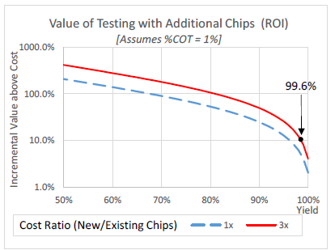

By Dave Armstrong, Director of Business Development, Advantest America, Inc.
Large, thin and high-power digital ICs pose a number of challenges to the test process necessary for achieving true known-good-die (KGD). As these costly, fragile devices are destined for advanced 2.5D and 3D packaging solutions, advanced test capabilities and solutions must be implemented to reduce scrap assemblies and improve product margins. Producing a true KGD prior to assembly requires bringing final test and potentially system-level test content forward, executing it at the die level. This calls for an advanced thermal control (ATC) system, similar to what is traditionally used at final test, as well as fine-pitch probe alignment capability that exceeds the capability of leading-edge wafer probers. These are the two areas that Advantest aims to address with its die-level handler. To understand the product’s benefits, it’s important to look at the packaging landscape that gave rise to its development.
The assembly and packaging process is changing rapidly, with multi-chip assemblies becoming mainstream. When multiple devices are assembled together in one assembly (either 2.5D or 3D), the yield risk is driven by the lowest yielding device. Unfortunately, costly, high-yielding memory stacks may need to be scrapped because of undetected faults on other devices in the assembly.
Further complicating this situation is that high- and/or low-temperature testing is often needed to detect many of the marginal faults in a device. Traditional wafer probers lack a thermal control system responsive to on-die temperature variations. Other techniques (sticky tape, wafer frames, etc.) lack a viable thermal interface to the device-under-test (DUT), making thermal control very difficult or more likely impossible.
The Advantest HA1000 die-level test system reduces the risks associated with 2.5D and 3D assembly, providing a way to handle, chuck, probe, and thermally control singulated thin die, die stacks, 2.5D assemblies, and even partially assembled 2.5D devices. Features support probing of pads, bumps, pillars, or even through-silicon vias (TSVs) with pitches down to 50 microns or smaller.
Today’s KGD test challenges
The earlier KGD tests can be performed, the lower the test and yield costs, as well as the overall cost of goods sold. Today, both memory and logic performance testing and burn-in are being implemented as early as possible in the device test flow. This KGD testing of multi-die, 2.5 and 3D devices at the die level prevents more costly yield loss later at package-level test, as it identifies process problems earlier so they can be corrected to prevent assembling bad die on otherwise good assemblies. Without this step, yield cost will be higher in 3D chip manufacturing and 2.5D and 3D packaging, as well as for systems-in-package (SIPs) and multi-die devices.
Package-level testing usually runs high-performance tests prior to board and system assembly, driving up power and thermal control requirements. Additionally, package-level burn-in can increase this requirement by 1.5x to 2.5x and drives ATC requirements. As chips and systems become more integrated using 3D packaging technologies, this performance and reliability KGD testing will be required much earlier, at the wafer and die levels, before package assembly.
Pre-assembly die-level and partial-stack test insertion could provide a way to execute high-power thermal tests. The Advantest HA1000’s ATC, together with an extremely low thermal resistance, supports high-power scan tests, elevated voltage screens, dynamic voltage screens and other test techniques to perform die-level sorting prior to stacking. This increases the shipped products’ quality level and screens for new reliability defects that may have been introduced during the thinning, bumping and sawing steps. Due to the reduced thermal mass, the ATC can also perform single-pass, multi-temperature testing by cycling temperatures several orders of magnitude faster than traditional wafer probe systems.
The value of adding a test step
While it is possible to use this type of prober to replace wafer probe itself, it’s proving more valuable when additional test insertions are made into a traditional manufacturing flow. Adding a pre- or partial-assembly test step requires a financial analysis to confirm its return on investment (ROI). Figure 1 indicates that the return on the test investment is 10 percent or more if the product yield is less than or equal to 93.3 percent (assuming the COT is a conservative 10 percent).
Figure 1: Single Chip = Value of Testing (ROI)
When considering the addition of a new test insertion prior to an assembly step involving the cost of additional chips, the same approach can be utilized to determine ROI. As shown in Figure 2, if the additional chips (or interposer/package) are 3x the cost of the component being added, the ROI for additional testing prior to assembly is 10 percent or greater if the yield of the last device is less than or equal to 99.6 percent. Of course, a more realistic back-end yield would provide a significantly higher ROI.
Figure 2: Single Chip = Value of Testing (ROI)
A new approach: singulated die handling and testing
The Advantest HA1000 is a device-level handler for bare die stacks and partially assembled devices. Main features include precise, vision-based alignment; the ability to handle a wide range of device sizes and thicknesses; support for very high-pin-count probing; and integrated high-power-capable active thermal control. Depending on the size of the device and temperature setpoint, the HA1000 can heat or cool parts of up to 300 watts. The handler incorporates a flexible, dual-fluid thermal control system that can accommodate temperatures in the range of -40°C to +125°C.
A prime advantage of the die-level tester is that it allows devices to be tested after wafer thinning, bumping and dicing. Testing devices in die form detects not only faults from the assembly process (chipping and cracking) but also untested faults, which are typically handled at final test, for more complete KGD test.
Placing and probing thin die
Probably the most critical step for probing raw thinned devices is a world-class vision alignment system capable of positioning the probes appropriately on top of the fine-pitched device structures. For large and high-power thin die, an additional challenge is to apply enough probe force to ensure equal low contact resistance and thermal resistance across the entire die while not damaging the thin die.
The chuck must be carefully balanced to provide good surface area for thermal conduction. The HA1000 does this by using a monitored three-zone vacuum, ensuring that all corners of the die make solid thermal contact to the chuck. If suitable vacuum is not achieved in all three regions, an alarm sounds and the test stops. The chuck is carefully designed, using micro-channel technology, to avoid hot spots or temperature gradients.
Conclusion
The Advantest HA1000 provides the industry with a unique opportunity to achieve true known-good devices at the die level – prior to assembly. By carefully positioning thin or thick, large or small devices on a fast-responding thermal chuck, it enables final and/or system-level testing to be conducted earlier in the manufacturing sequence. Performing this extended testing prior to assembly helps ensure that all the parts integrated into a 2.5D or 3D structure are high-yielding, highly reliable devices. Further, this additional test step reduces scrap assemblies and reduces product cost. As a result, the ROI for an additional die-level test step is excellent.
For further reading:
Known-Good-Die Test Methods for Large, Thin, High-Power Digital Devices by Dave Armstrong and Gary Maier; International Test Conference, 2016.

